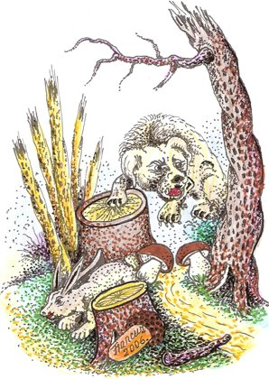

Zekina sreća
Bunny's Luck

Na bojnom se polju- tako stoje stvari -sreli jedan zekoi pas neki stari.
On the field of battle(so the story's told)there once met a bunnyand a dog grown old.
Odjedanput planustara mržnja ona,što se među njimagaji od iskona.
All at once it flared up,that old hate again,nursed between the two of themsince time first began.
Iskesio Šarkosjajne zube jake,pogladio zekosvoje šape lake.
Šarko bared his teeth,gleaming, strong, and bright,and the bunny smoothedhis paws, quick and light.
Rikne Šarov snažno,zemlja se zatrese,zeku brza nogakroz polje ponese.
Šarov roars with might,the earth shakes all around;the bunny's swift feetsweep him over the ground.
Trče preko polja,laje ljuta psina,isplazio jeziki curi mu slina.
Over fields they're running,barks the angry hound,with his tongue hung out,slobber dripping down.
A zekan ušesapoleg'o na leđa,juri kao munjai prati ga sreća.
And the bunny, long earsflat along his back,races like lightningwith luck on his track.
Tu se gusta šumanašla u blizini,zeko šmugne u nju –izgubi se psini.
Then a thick foresthappened to be near;bunny slipped inside it,and the hound lost him there.
I tako se ovazavršava priča.Ne će Šarko jestiza ručak zečića.
And so this talecomes to an end:Šarko won't be eatingbunny for lunch, my friend.